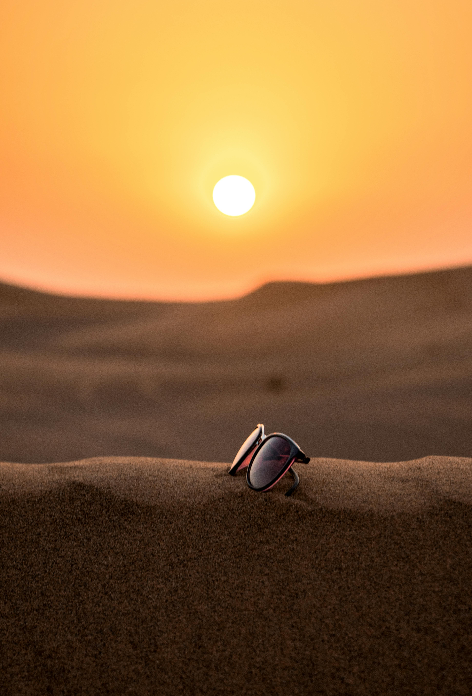

UV is not the same as heat
A day can feel cool and still have strong UV. You cannot judge UV risk by temperature alone.

In Australia, UV can be strong even when it does not feel hot. Learn what UV does to your skin, why tanning is still damage, and how to protect yourself from intense UV radiation.
Australia has some of the highest UV levels in the world. That means sun protection is important for young people spending time outdoors.
A day can feel cool and still have strong UV. You cannot judge UV risk by temperature alone.
The stronger the UV, the faster unprotected skin can be damaged.
UV can lead to sunburn, tanning, early ageing, eye damage, and skin cancer risk.

Pain, redness, and visible skin damage after too much UV exposure.
A tan is your skin reacting to injury from UV, not becoming healthier.
Too much UV can lead to wrinkles and changes in skin texture over time.
Your eyes also need protection from UV, not just your skin.
Skin tones do not all react in exactly the same way to UV, but every skin type still needs protection.
Melanin is the pigment that gives skin its colour. Higher melanin can provide some natural protection against UV, but it does not stop UV damage completely. That means darker skin may burn less easily than lighter skin, but it can still experience skin damage, pigmentation changes, early ageing, and skin cancer risk.
Some people burn faster than others, but UV still affects every skin type. Sun safety is not only for fair skin.
A good message to pass on is: “Different skin tones respond differently, but everyone still needs sun protection when UV is high.”
“Only fair skin needs sunscreen.”
All skin types can be damaged by UV, even if some burn less quickly.
Tell your friends to check the UV Index, not just the weather temperature.
Pick the best answer for each question.
Check the UV Index before heading out.
Apply SPF 50 or 50+ broad-spectrum sunscreen.
Wear protective clothing and sunglasses.
Help friends understand that all skin types still need UV protection.